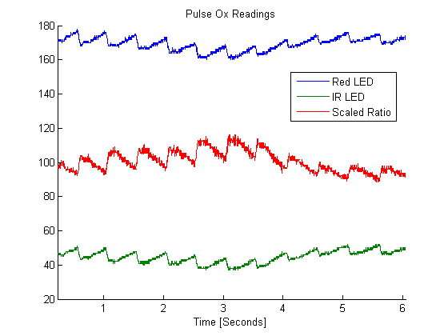

Mathematical Modeling of Mesenchymal
Stem
Cell - Cardiomyocyte
Electrical Interactions

Human mesenchymal stem cell delivery has exhibited potential in clinical myocardial infarction therapies; however, the large scale application of this method is limited by the fact that researchers do not fully understand the mechanisms by which mesenchymal stem cells enhance cardiomyocyte function. Mathematical modeling is a powerful tool that can predict how mesenchymal stem cells interact with cardiomyocytes. Therefore, to better understand the electrical role of mesenchymal stem cells, three novel electrophysiology models were developed. Significant electrophysiological consequences were evident when the ten Tusscher model was coupled to each of the mesenchymal stem cell models in ratios of 9:1, 4:1, and 1:1, respectively. These effects include decreases in action potential duration and plateau height, and corresponding variations in ionic current. Furthermore, there was a decrease in conduction velocity and maximum upstroke velocity. These consequences correspond to established in vitro electrical effects, and show mesenchymal stem cells are capable of predisposing re-entrant arrhythmias. A sensitivity analysis on the mesenchymal stem cell inputs shows the robustness of the results. Overall, this model provides promising insight into the electrical inter- actions between the two cells types, and can be used in future studies to optimize conditions for mesenchymal stem cell therapy.
Date Completed: 5/14
read more
Manufacturing the Next Generation of Vaccines

The influenza virus causes approximately 17,000 to 51,000 deaths a year in the U.S. alone, and could potentially cause over a million deaths globally. This pandemic therefore is a global health and economic concern, making it of interest to develop a vaccine. Specifically, a new trivalent flu vaccine will be developed using SF9 insect cells for influenza A, B-hemagglutinin, and B-neuraminidase. We seek to produce 50 million doses of flu vaccine, which is approximately one-third of the total flu vaccine distributed during the 2013-2014 influenza season in the United States. To develop this trivalent flu vaccine, a non-traditional disposable approach will be taken, with the following steps: 1) preparing media and buffer; 2) expanding cells by a seed train where cells are multiplied; 3) producing vaccine by by innoculating the cells with the recombinant Baculovirus; 4) recovering the contents and products via centrifugation and filtration; 5) inactivating the virus; 6) capturing and purifying the vaccine of interest; and 7) concentrating and stabilizing the material for shipping. Accounting for the cost of each of these steps, the cost of good sold is $0.08 per dose. For a plant life of 8 years, a dosage price as low as $0.44/dose is required to obtain a rewarding investment rate of return of 25% and total profit of $60 million. Current egg-based versions of the flu vaccine require a dosage price as high as $0.64/dose to obtain a similar investment rate of return and total profit. With our design at a selling price of $0.64/dose, it is possible to achieve an investment rate of return as large as 42%, and a total profit of $120 million.
Date Completed: 5/14
read more
Mathematical Modeling of the Effects of Liver Tumor Ablation on Temperature, Blood Flow, and Oxygen Transport

Radiofrequency ablation is typically used to heat up malignant liver tissue to critical temperatures in order to kill cancerous cells. However, this hyperthermic process also has noticeable effects on the microvasculature of tumor tissue (i.e. capillary blood vessels). Specifically, it has been empirically shown that heating up cancerous tissue also affects blood flow and oxygen transport. Mathematical modeling is a powerful tool to analyze and control blood flow and oxygenation as a function of transient temperature rise within tissue. Therefore, in this study, a mathematical model was developed via COMSOL Multiphysics to describe the effects of radiofrequency ablation on blood flow and oxygen transport within tumor tissue. It was determined that the application of radiofrequency ablation on cancerous liver tissue for 60 seconds increases the average temperature of the tumor tissue from 37 ° C to 43 ° C. The hyperthermic effects of radiofrequency ablation subsequently resulted in an increase of capillary blood vessel radius by 30%, an increase in blood flow velocity by 70%, and an increase in overall oxygenation. This study shows that radiofrequency ablation can potentially be coupled with chemotherapy to enhance the efficacy of delivering pharmacological agents.
Date Completed: 5/14
read more

Detection Algorithms for Stochastic Processes
The purpose of detection is to be able to separate information-bearing patterns from random patterns that distract from the transfer of information. Depending on the amount of distracting noise and quality of underlying information, this task can be difficult. A simple approach for this problem is to compare the signal to a threshold determined by a decision rule based on the characteristics of the signal and channel. In these exercises, the parameters of a MAP detection system were examined. Channel characteristics such as varying priors, SNRs, and transmission distributions were considered, and detector constraints such as the minimax rule, as well as different cost structures were analyzed.
Sometimes detection cannot be done with just a threshold because the data set contains multiple features and classes. Machine learning remedies this problem by using statistical characteristics of the datasets to classify them. A machine learning system using a MAP estimate is trained, and its performance is tested using the Iris dataset.
read more

Pulse Oximeter
Pulse oximetry is a noninvasive method of measuring blood oxygenation. The method is based on the fact that different wavelengths of light are absorbed extremely differently by oxyhemoglobin and deoxyhemoglobin. The ratio of oxyhemoglobin to deoxyhemoglobin can be calculated by measuring these different adsorptions, and can therefore give a measurement of how well oxygen is being absorbed by the blood.
The absorption measurements are made by shining light from red and infrared LEDs through a thin area of the body, usually a finger, and measuring how much a photodiode on the other side is activated. The more light that is absorbed by the hemoglobin, the less light will reach the photodiode. By alternately turning on and off the red and infrared LEDs at short intervals, the relative absorptions of each wavelength could be measured as current through the photodiode.
read more

Marble Match
“Marble Match” is a game designed specifically for autistic children, with the intent of engaging these children despite their disability. Because autistic children often have short attention spans and become bored or frustrated by games that other children enjoy, Marble Match isintended to be an simple game which offers a clean and attractive visualreward for completing the task of the game. It involves matching colored marbles to the color of several LEDs when they light up. If the correct color marble is inserted into the correct hole at the top of the tower, a series of IR sensors, a color sensor, and a servomotor check and consequently channel the marble to a transparent helical tube. The spiraling motion of colored marbles is a visually pleasing reward which can captivate children without flashing lights and or playing loud sounds, both of which often aggravate autistic children. The game teaches the basic concept of matching colors, and more importantly can allow children to learn patience and diligence.
read more

Super Mario Bros with Digital Logic
This project was an implementation of Nintendo’s Super Mario Bros. using digital logic. In this game, Mario is represented by an LED and is stationary in the x-direction, and enemies, also represented by LEDs, approach him from the positive x-direction. The player receives points, displayed on two 7 segment displays, for jumping at the right time using a jump button and landing on the enemies. The player also has to jump over gaps in the ground, displayed on a second row of LEDs below Mario and the enemies. The game is synchronized with a short excerpt of the Super Mario Bros. song playing on a piezoelectric element or speaker, which repeats once it reaches its end. The song adds to the user experience of the game as well as the complexity of the project.